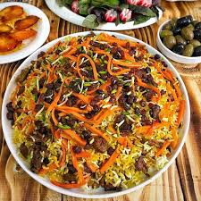
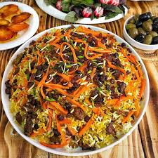

Welcome to My Recipe Book
Where every recioe tells a story taste the love in every bite ☺
Where every recioe tells a story taste the love in every bite ☺
It is one of the most famous and popular dishes of Afghanistan.
This dish is considered a traditional Afghan pilaf and is often prepared for gatherings, weddings, and special occasions.
Qabuli Pulao:Steames rice cooked with tender meat,raisins, carrots, and aromatic spoces
 
